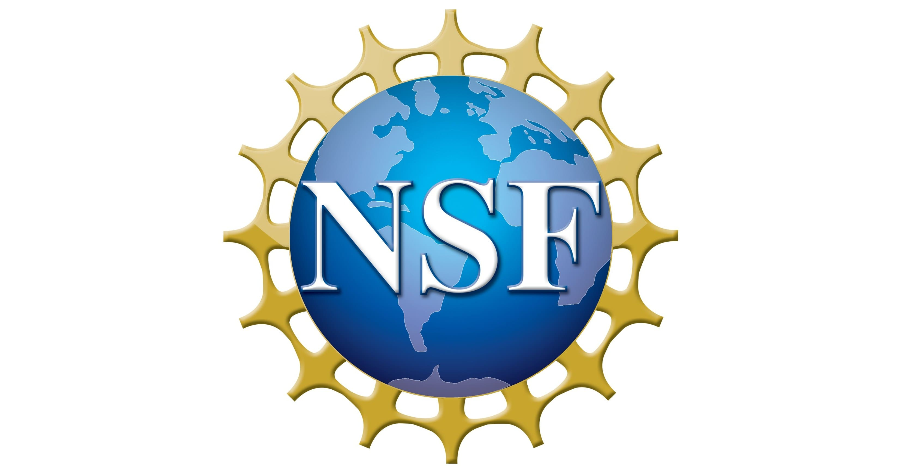

Danyang Zhuo
Assistant Professor
Duke System Group
Department of Computer Science
Duke University
danyang@cs.duke.edu
Biography
I am an assistant professor in the Department of Computer Science at Duke University. Before Duke, I was a postdoctoral researcher at UC Berkeley, working with Professor Ion Stoica. I completed my Ph.D. in the Paul G. Allen School of Computer Science and Engineering at University of Washington, advised by Professor Tom Anderson and Professor Arvind Krishnamurthy. My research has received NSF CAREER Award (2023), IEEE/ACM MICRO Best Paper Award (2025), USENIX Security Distinguished Paper Award (2023), USENIX FAST Best Paper Award (2021), Google Academic Research Award (2024), Meta Research Award (2022, 2021), Amazon Research Award (2021), and IBM Academic Award (2021).
Research
My research interests are (1) datacenter and cloud computing and (2) machine learning systems. Some current research projects are:
- Phoenix, a system service that exposes common application-level abstractions for speed and manageability. Its components include:
- MCCS (SIGCOMM24), an collective communication system that decouples algorithm choice from applications, allowing the system to adjust algorithm choice without application interruption.
- mRPC (NSDI23), an RPC architecture that supports efficient RPC-level policies and live upgradability.
- A series of machine learning system research, including:
- LLM.265 (MICRO25), using video codecs to compress tensors.
- KVCOMM (NeurIPS25), sharing key-value caches in multi-agent systems.
- Plato (COLM25), using planed parallel decoding to speed up large language model inference.
- VTC (OSDI24), a large language model serving system with fairness guarantees.
- Punica (MLSys24), a serving system for LoRA fine-tuned large language models.
- JellyBean (VLDB23), a serving framework for ML workflows.
- Alpa (OSDI22), a training framework for large neural network models.
- TeraPipe (ICML21), a new parallelism dimension for training large language models.
- Ansor (OSDI20), a compiler to generate efficient code for hardware accelerators.
Past research projects include:
- RDMABench, a test framework for RDMA software/hardware stack. Its components include:
- Husky (NSDI23), a test suite for RDMA performance isolation for multi-tenancy. Our follow-up work, Harmonic (NSDI24), is the first step towards the performance isolation issues found by Husky.
- Collie (NSDI22), a test suite for RDMA performance anomalies.
- A series of exploration of using Rust in operating system development, including:
- Enoki (EuroSys24), a operating system scheduler framework in Rust.
- Bento (FAST21), a file system framework in Rust.
Students
I am very fortunate to work with a fantastic group of PhD students. I am recruiting PhD students for Fall 2026. Please apply to Duke CS if you are interested in working with me!
- Zhuo Chen
- Alexander Du (with Matthew Lentz)
- Yicheng Jin
- Jianxing Qin
- Yechen Xu
- Yuncheng Yao (with Tingjun Chen)
Past PhD Students:
- Jingrong Chen (2025). Uber.
- Yongji Wu (2024, with Matthew Lentz). Postdoc at UC Berkeley.
- Xinhao Kong (2024). NVIDIA.
- Samantha Miller (2023, with Tom Anderson). Databricks.
Teaching
- Fall 2025: Introduction to Operating Systems (CompSci 310)
- Spring 2025: Systems for Machine Learning (CompSci 590.05)
- Spring 2024: Introduction to Computer Systems (CompSci 210)
- Spring 2023: Distributed Systems (CompSci 512)
- Fall 2022: Introduction to Operating Systems (CompSci 310)
- Spring 2022: Data Center Systems (CompSci 590.04)
- Fall 2021: Introduction to Operating Systems (CompSci 310)
- Fall 2020: Advanced Operating Systems (CompSci 510)
Service
Organizer:
- 2022: Co-Chair for SIGCOMM Artifact Evaluation Committee
Technical Program Committee:
- 2026: ASPLOS, MLSys, NSDI, SIGMOD
- 2025: APNET, NSDI, SIGCOMM, SIGMOD
- 2024: APNET, CoNEXT, NSDI, SIGMOD
- 2023: APNET, NSDI, SIGCOMM
- 2022: APNET, FAST, NSDI, SIGCOMM
- 2021: CoNEXT
- 2020: SIGCOMM
Acknowledgement
I thank the following organizations and companies for their generous support:
